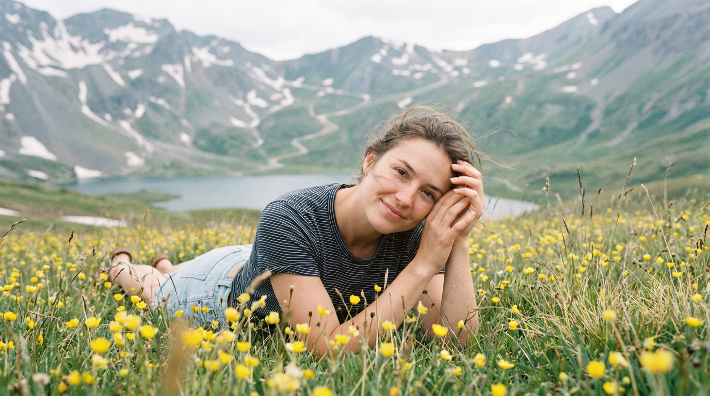
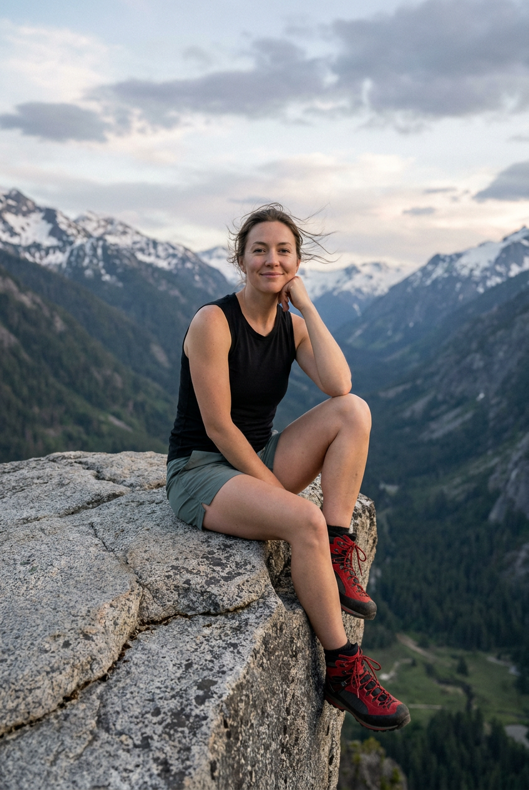
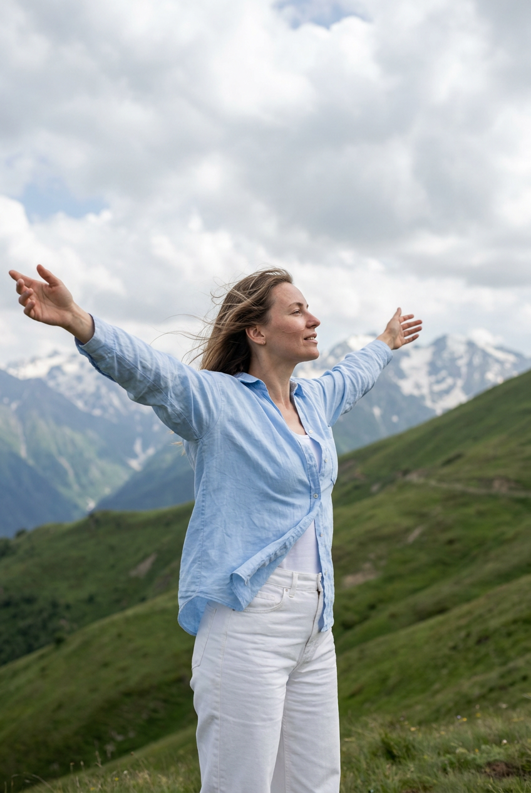
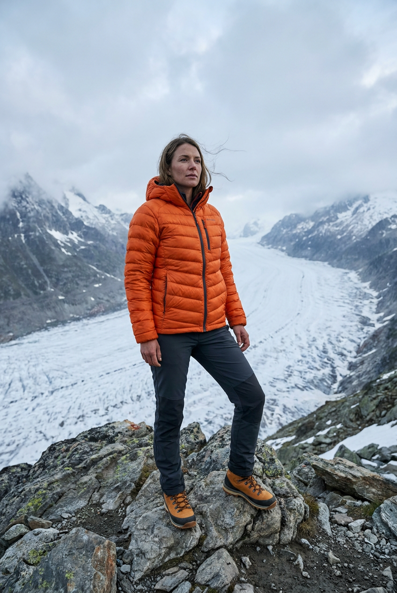
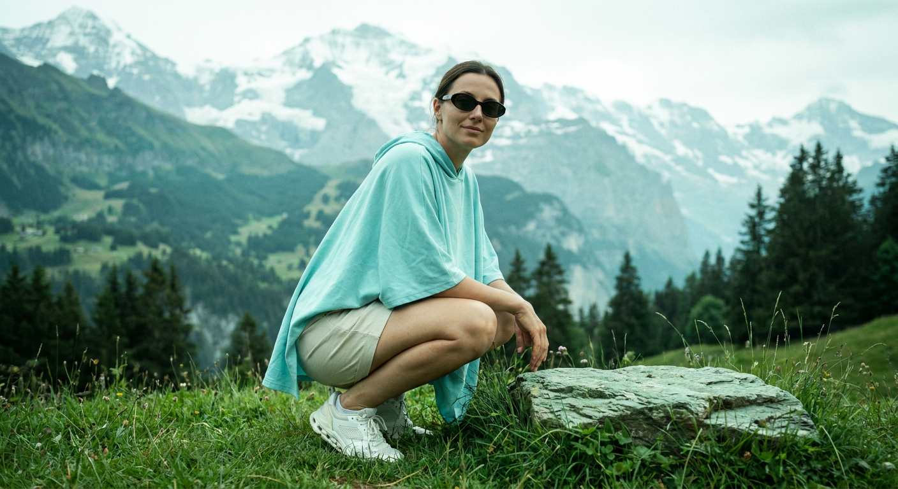
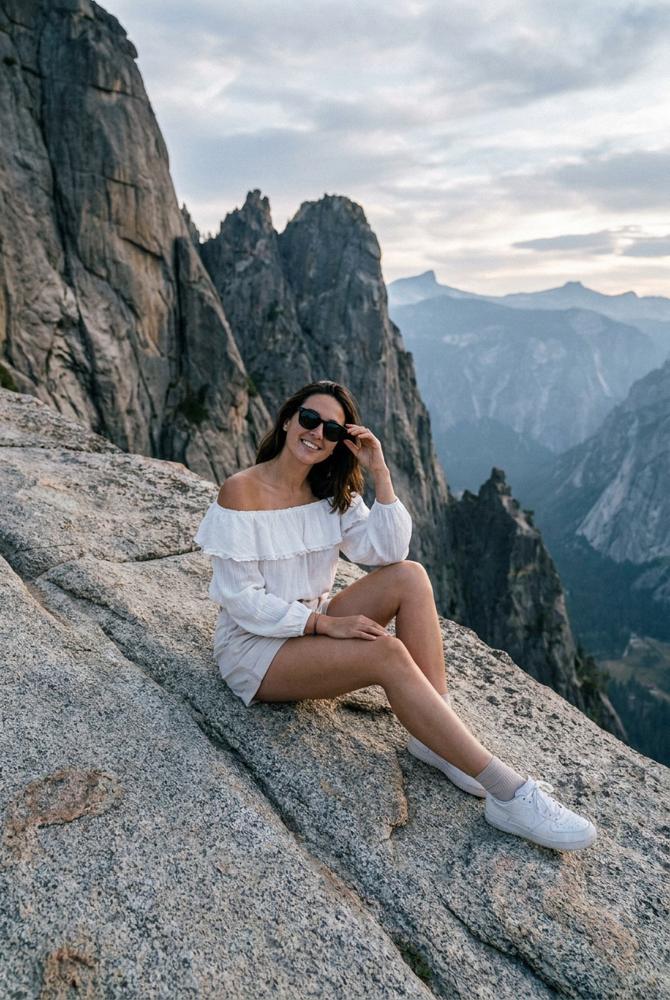
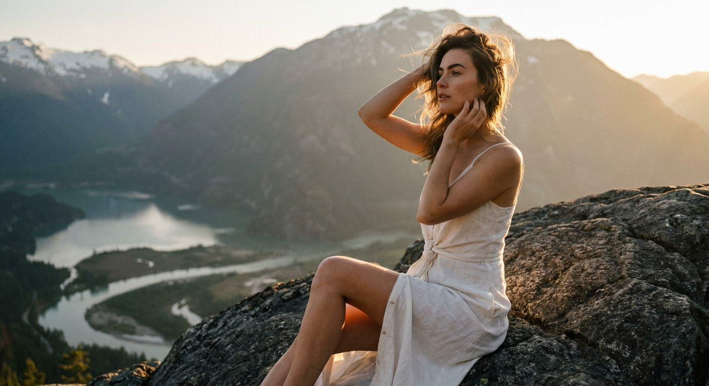
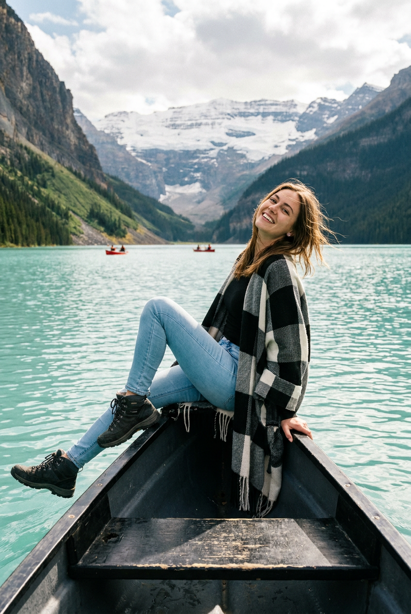
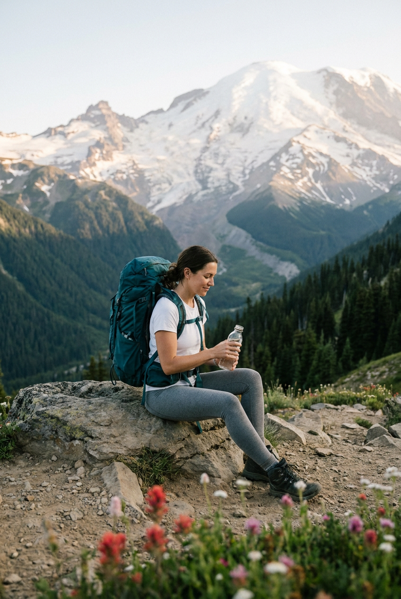
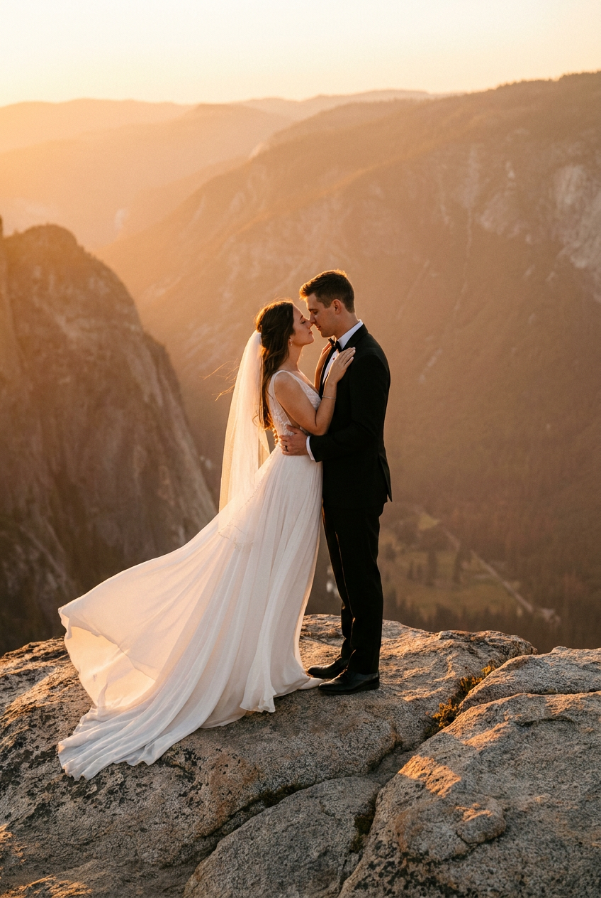

ИИ-фото в горах: 10 промптов для нейросети

Красивый горный кадр сложно снять случайно: нужен подходящий сезон, погода, свет и безопасная точка для съёмки. Генерация решает эту задачу — можно собрать нужную сцену, позу и настроение, а затем доработать результат по референсу.
В подборке — 10 сценариев для ИИ-фото в горах: от портрета в цветущем лугу и снимка на гранитном выступе до лодки на фоне долины и свадебной сцены на вершине. Промпты рассчитаны на вертикальные, горизонтальные и квадратные композиции.
Как сгенерировать такое фото: пошагово
Нужен снимок анфас при ровном свете, лицо в кадре целиком, без тёмных очков и головных уборов. Разрешение от 1000 пикселей по короткой стороне. Чем чётче исходник, тем точнее модель повторит черты.
Выберите сценарий ниже и нажмите «Копировать» — текст уйдёт в буфер целиком, вместе с командой сохранения внешности. Эта команда стоит первой строкой и отвечает за то, чтобы на выходе было ваше лицо, а не случайное.
Кнопка «Сгенерировать» рядом с каждым промптом открывает модель в новой вкладке. Nano Banana Pro работает с референсом лица — в отличие от моделей, которые генерируют портрет с нуля и узнаваемость теряют.
Промпт — в поле ввода, портрет — через загрузку референса. Порядок значения не имеет, но без референса команда сохранения внешности работать не будет: модели нечего сохранять.
Для сторис и ленты берите 9:16, для превью и обложек — 4:3. Первый результат редко идеален: если поза или свет ушли не туда, поправьте соответствующую часть промпта и запустите заново. Обычно хватает двух-трёх итераций.
10 промптов для генерации
1. Портрет на цветочном лугу
Строго сохранить внешность по загруженному референсу: черты лица, пропорции, мимику и текстуру кожи без изменений. Фотореалистичный кинематографичный горный портрет, горизонтальный кадр с очень низкой точки, словно камера лежит почти на уровне земли. В передней части изображения — густой луг с высокой травой и мелкими жёлтыми полевыми цветами: ближайшие стебли и отдельные бутоны резко прорисованы, остальные уходят в мягкое боке. В центре девушка лежит на траве, слегка поднявшись на локтях, и поворачивает голову к объективу. Она тепло улыбается. Руки подняты к лицу, пальцы аккуратно сложены, кисти и ногти выглядят естественно. На ней тёмный короткий топ или футболка в тонкую светлую полоску, рукава слегка приспущены или закатаны, внизу светлые джинсы либо светлый повседневный низ. Естественная мимика, реалистичная кожа, горный фон, мягкий дневной свет, малая глубина резкости, объектив 35 мм, f/2.8, разрешение 8K.
2. На краю гранитной долины

Строго сохранить внешность по загруженному референсу: черты лица, пропорции, мимику и текстуру кожи без изменений. Вертикальный фотореалистичный тревел-портрет в горах, камера на уровне глаз или немного ниже, чтобы за моделью открывался масштаб глубокой долины. Девушка сидит на кромке большого серого гранитного камня; поверхность скалы должна быть шероховатой, с трещинами, зернистой фактурой и рассыпанной каменной крошкой. Ноги поджаты: одна согнута и упирается в выступ, вторая опущена ниже, образуя устойчивую треугольную композицию. Корпус чуть развёрнут вправо, голова мягко наклонена, взгляд прямо в объектив, на лице спокойная расслабленная улыбка. Одна рука согнута, кисть поддерживает подбородок или линию челюсти, пальцы лежат аккуратно. Сохранить лицо по загруженному референсу без изменения индивидуальных пропорций. Натуральный свет, видимые слои гор и долина внизу, документальная детализация, объектив 50 мм, f/4, вертикальное разрешение 8K.
3. Ветер на зелёном склоне

Строго сохранить внешность по загруженному референсу: черты лица, пропорции, мимику и текстуру кожи без изменений. Кинематографичный фотореалистичный outdoor-кадр, вертикальная композиция, девушка стоит на зелёном травянистом склоне среди гор. Её корпус немного развёрнут в сторону, руки широко раскрыты, ладони слегка направлены вверх, будто она ловит поток воздуха. Голова повернута в профиль и чуть откинута назад, взгляд уходит к небу и облакам. Эмоция спокойная, вдохновлённая, уверенная, без театральной улыбки. На девушке лёгкая светло-голубая рубашка или блуза с распахнутыми рукавами; ткань заметно колышется на ветру. Под ней виден белый топ без рукавов или укороченный топ, низ — белые облегающие брюки либо джинсы с высокой посадкой. Черты лица и естественные пропорции взять с загруженного референса. Объёмные облака, дальние хребты, чистый дневной свет, натуральная кожа, лёгкое размытие фона, объектив 35 мм, f/3.2, 8K.
4. Оранжевая куртка над ледником

Строго сохранить внешность по загруженному референсу: черты лица, пропорции, мимику и текстуру кожи без изменений. Фотореалистичный туристический кадр в горах, вертикальная ориентация, съёмка с точки немного ниже уровня глаз. Девушка стоит на вершине каменистого выступа среди крупных валунов и мелкой серо-коричневой щебёнки; на камнях видны песок, шероховатые участки и небольшие пятна травы. Ноги расставлены устойчиво, руки свободно опущены вдоль тела. Голова слегка поднята, взгляд направлен в объектив или чуть выше линии горизонта, выражение лица спокойное и уверенное, улыбка едва заметная и естественная. На ней яркая оранжевая стёганая пуховая куртка с объёмными секциями, заметными строчками и молнией, матовая ткань выглядит реалистично. Добавить тёмные брюки, горный рюкзак и практичную обувь. За спиной — широкая долина, ледник и высокие хребты, подчёркнутые перспективой. Естественный холодный свет, объектив 28 мм, f/5.6, высокая детализация, вертикальное 8K-разрешение.
5. Бирюзовая накидка в Альпах

Строго сохранить внешность по загруженному референсу: черты лица, пропорции, мимику и текстуру кожи без изменений. Фотореалистичный ландшафтный портрет в Альпах, вертикальный кадр с низкой камеры примерно на высоте травы. На переднем плане зелёный травянистый склон и край небольшого плоского камня. Девушка находится у скалы в полуприседе: одна нога под корпусом, вторая согнута, корпус немного развёрнут вправо. Она смотрит прямо в объектив, поза собранная, выражение спокойное, улыбка лёгкая и уверенная. Лицо повторяет загруженный референс, а на глазах тёмные солнцезащитные очки круглой или овальной формы. На ней свободная светлая голубая или бирюзовая накидка, рубашка oversize либо драпировка в форме пончо; ткань ложится крупными мягкими складками и частично открывает руки. Вокруг — альпийские луга, камни и масштабные горы, мягкий солнечный день, натуральные цвета, фокус на модели, трава с лёгким боке, объектив 35 мм, f/2.8, 8K.
6. Белый наряд на гранитной плите

Строго сохранить внешность по загруженному референсу: черты лица, пропорции, мимику и текстуру кожи без изменений. Вертикальный фотореалистичный тревел-кадр: девушка сидит на большой гранитной плите высоко в горах. Светло-серый камень занимает передний план, его зернистая поверхность дополнена вкраплениями, трещинами и неровными уступами. Модель сидит на согнутых ногах, одна нога выдвинута немного вперёд, корпус повернут к камере, голова наклонена в сторону. На лице расслабленная уверенная улыбка, взгляд скрыт тёмными солнцезащитными очками. Правая рука поднята к виску или внешнему уголку глаза: пальцы выглядят так, будто девушка поправляет очки или убирает прядь волос. Одежда — белый лёгкий нарядный верх с открытыми плечами, силуэт бандо или корсетный крой, многослойные оборки и воздушные складки. На заднем плане — горный склон и просторная долина. Тёплый рассеянный свет, натуральная текстура кожи и ткани, объектив 50 мм, f/3.5, вертикальное разрешение 8K.
7. Тёплый свет на скале

Строго сохранить внешность по загруженному референсу: черты лица, пропорции, мимику и текстуру кожи без изменений. Кинематографичный фотореалистичный тревел-портрет: женщина сидит на выступе крупного тёмно-серого камня, вертикальная композиция с акцентом на силуэт и фактуру скалы. Она снята в полупрофиль, слегка запрокинула голову и смотрит в сторону солнца, вверх по склону. Поза расслабленная, руки подняты к лицу, будто девушка касается волос или наслаждается тёплым горным воздухом. На ней светлый летний комплект — белый сарафан, платье или лёгкая накидка с открытыми плечами. Ткань струится, образует мягкие складки и слегка отходит от тела на ветру; на талии видны мягкие ремни или завязанный узел. Ноги подогнуты и частично попадают в кадр, кожа подсвечена золотистым светом заката. Волосы растрёпаны ветром, отдельные пряди развеваются и создают объёмный ореол. Сохранить лицо по референсу, объектив 85 мм, f/2, тёплый контровой свет, реалистичные блики, 8K.
8. Лодка на фоне гор

Строго сохранить внешность по загруженному референсу: черты лица, пропорции, мимику и текстуру кожи без изменений. Фотореалистичный кинематографичный тревел-кадр в горах, вертикальная или квадратная композиция. Девушка сидит на носу небольшой гребной лодки или прогулочного каноэ. Корпус лодки тёмный, чёрный либо графитовый, на поверхности заметны текстура материала и лёгкие следы износа. Девушка расположена боком к камере, ноги вытянуты вперёд и немного согнуты, корпус повернут вправо. Она слегка запрокидывает голову, улыбается прямо в объектив, выглядит дружелюбно и естественно. Волосы чуть развеваются от ветра. Одна рука расслабленно лежит на борту, вторая опирается на колено или край лодки рядом с ногами. На ней чёрный облегающий топ или укороченная майка, светлые брюки либо шорты для прогулки. Вода отражает горы, за спиной — скалистые хребты, мягкая дымка и чистое небо. Естественный дневной свет, объектив 35 мм, f/4, реалистичные отражения, разрешение 8K.
9. Цветы у горной тропы

Строго сохранить внешность по загруженному референсу: черты лица, пропорции, мимику и текстуру кожи без изменений. Вертикальный фотореалистичный тревел-кадр в эстетике lifestyle и nature documentary. Передний план занимает каменистый склон или горная тропа из серых валунов и мелкой щебёнки; на камнях заметны пыль, микротрещины и неровная шероховатая фактура. В правой нижней части кадра растут яркие красные, розовые и белые полевые цветы: ближайшие соцветия мягко размыты и создают глубину. Девушка сидит на устойчивом плоском камне над тропой. Одна нога согнута и выставлена чуть вперёд, вторая согнута позади или отведена в сторону, корпус слегка наклонён вперёд. Она смотрит вниз на предмет в руках или на поверхность тропы, выражение лица задумчивое и спокойное. Одежда — практичный светлый туристический комплект с лёгкой курткой, удобными брюками и обувью для маршрута. Лицо взять с референса, сохранить естественную мимику, мягкий горный свет, объектив 50 мм, f/2.8, 8K.
10. Свадебное объятие над долиной

Строго сохранить внешность по загруженному референсу: черты лица, пропорции, мимику и текстуру кожи без изменений. Кинематографичная фотореалистичная свадебная сцена в горах, вертикальный кадр. В центре — высокий каменистый выступ с грубой гранитной фактурой, трещинами и тёплыми золотистыми солнечными бликами. На вершине, у края скалы, стоит молодая пара; за ними раскрываются долины и дальние горные хребты, фигуры частично образуют выразительный силуэт. Женщина прижалась к мужчине, корпус немного развёрнут, руки подняты к его плечам или обвивают шею. Мужчина держит её за талию и спину, наклоняет голову навстречу. Лица расположены близко, момент напоминает почти поцелуй и передаёт нежность, влюблённость и доверие. На женщине длинное белое свадебное платье с мягкой юбкой, ткань слегка движется на ветру; у мужчины элегантный тёмный костюм и светлая рубашка. Сохранить лица обоих по загруженным референсам, золотой час, контровое солнце, объектив 70 мм, f/2.8, вертикальное разрешение 8K.
Что важно учесть в этом стиле
Горный тревел-кадр держится на масштабе: человек должен быть заметен, но не перекрывать долину, ледник или линию хребта. Для портрета на фоне пейзажа задавайте точку съёмки, фокусное расстояние и глубину резкости. Низкая камера усилит траву и камни перед объективом, а объектив 50–85 мм аккуратнее передаст лицо.
Отдельно описывайте фактуру окружения: трещины гранита, щебень, пыль, ветер в одежде, блики закатного света. Если нужен узнаваемый человек, добавляйте референс лица и просите не менять форму глаз, носа, губ и овал. После генерации проверьте пальцы, очки, края одежды и контакт ног с камнем.
Идеи для вариаций
- Перенесите сцену в хвойную долину, к бирюзовому озеру или на заснеженный перевал.
- Замените дневной свет на туманное утро, голубой час или жёсткое солнце после грозы.
- Добавьте трекинговые палки, термос, рюкзак, карту маршрута или связку альпинистского снаряжения.
- Попробуйте съёмку с дрона, крупный портрет 85 мм или широкий объектив 24 мм с сильным передним планом.
- Для свадебной версии измените платье на летящее шифоновое, а костюм — на светлый льняной.
Как собрать свой промпт
Начните с формата и жанра: например, «вертикальный фотореалистичный тревел-портрет, объектив 50 мм». Затем задайте место, точку камеры, положение героя, направление взгляда и эмоцию. После этого опишите одежду, материалы, погоду, свет и детали переднего плана.
Один промпт лучше посвящать одной сцене. Не смешивайте лодку, скалу и цветущий луг без объяснения композиции. Для стабильного результата проведите 4–8 генераций с одной формулировкой, меняя только свет, фокусное расстояние или позу. Референс лица добавляйте отдельно, если сервис поддерживает такую функцию.
Ошибки, из-за которых кадр не получается
- Слишком общая локация. Формулировка «красивые горы» не задаёт масштаб, поэтому добавляйте долину, ледник, скальную плиту, тропу или озеро.
- Неясная поза. Указывайте, какая нога согнута, где лежат руки и куда повернута голова.
- Перегруженная композиция. Если перечислить много объектов, модель может потерять лицо и главный сюжет.
- Игнорирование источника света. Без слов «контровой свет», «золотой час» или «мягкий рассеянный день» освещение получится случайным.
- Непроверенные руки и аксессуары. Очки, пальцы, ремни и края платья часто требуют нескольких повторных генераций.
Частые вопросы
Как сделать такое ИИ-фото бесплатно?
Для первых попыток подойдут Kandinsky и Шедеврум: они позволяют генерировать изображения без оплаты, но могут ограничивать число запросов, разрешение и точность работы с референсом. Krea AI и Arena.ai удобны для экспериментов и сравнения результатов, однако бесплатный доступ зависит от текущих правил сервиса. Референс лица поддерживается не одинаково: иногда доступны только текстовые промпты или упрощённая загрузка изображения.
Почему нейросеть меняет лицо по референсу?
Модель может плохо считывать исходное фото из-за маленького размера, сильного макияжа, закрытых глаз или поворота головы. Используйте чёткий портрет при ровном освещении, не перегружайте промпт деталями лица и генерируйте несколько вариантов. Для максимального сходства выбирайте режим image-to-image или отдельную настройку идентичности, если она есть.
Как получить естественную позу на скале?
Опишите опорные точки: где находится каждая нога, на что опирается рука, в какую сторону развёрнут корпус и куда направлен взгляд. Добавьте слова «устойчивая поза», «реалистичный контакт с поверхностью» и «естественная анатомия». После генерации проверьте, не проваливаются ли ступни в камень и не появляются ли лишние пальцы.
Как сделать горный фон фотореалистичным?
Задайте конкретную фактуру — гранит с трещинами, щебень, влажную траву, туман над долиной — и укажите свет. Для портрета используйте малую глубину резкости, а для пейзажа прикрытую диафрагму около f/5.6–f/8. Помогают также фокусное расстояние, реалистичные отражения воды и естественная воздушная дымка.